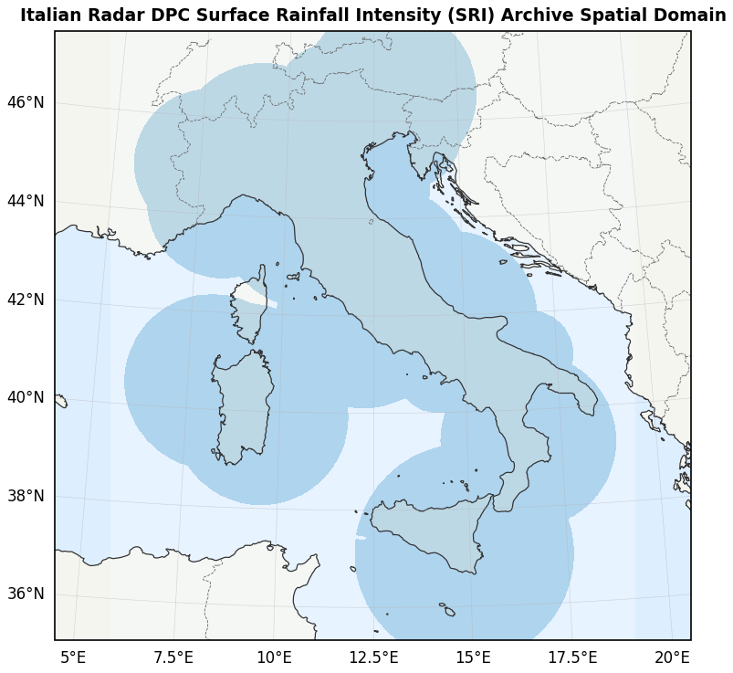
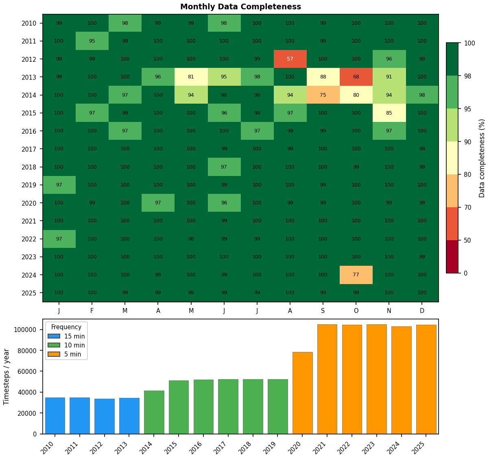
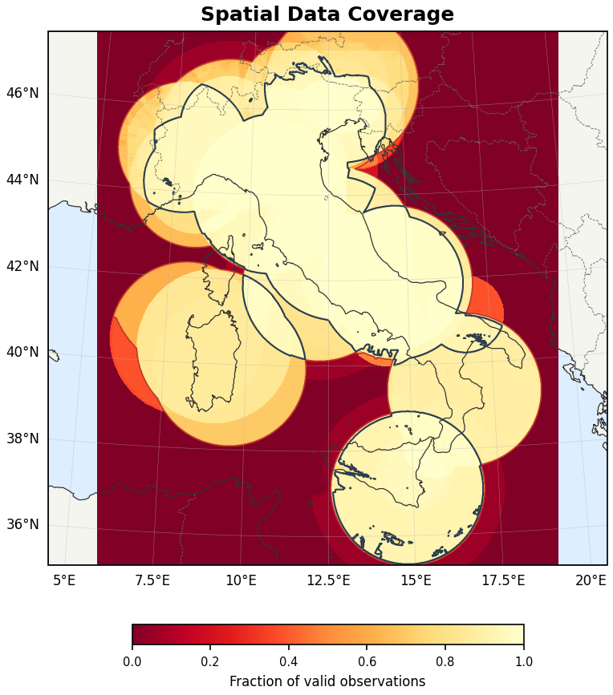
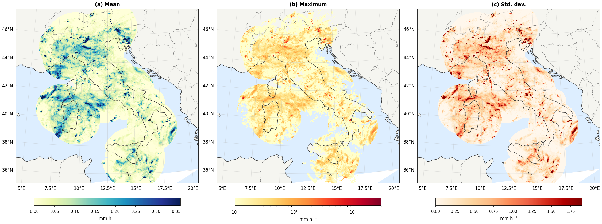
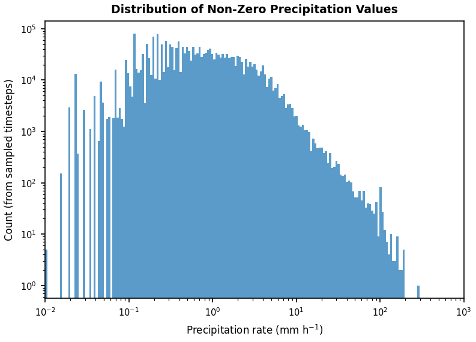
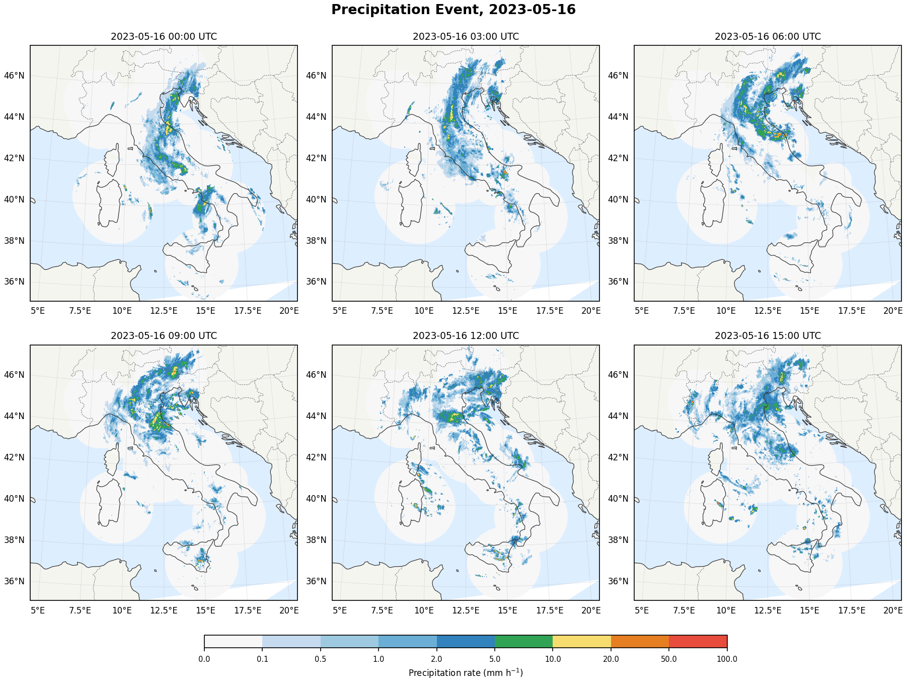
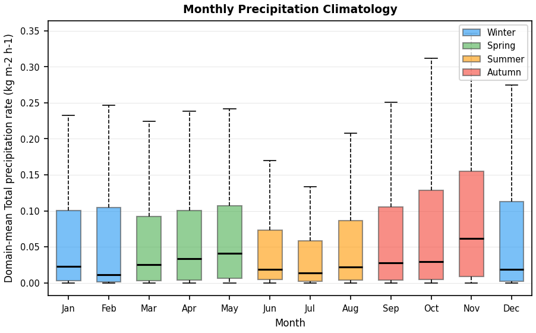

Plotting & Diagnostics#
The mlcast_datasets.plotting subpackage provides publication-quality diagnostic
figures for any dataset in the MLCast catalog. This notebook demonstrates every
plotting function using the Italian DPC SRI radar precipitation dataset as an
example.
All sample sizes are kept deliberately small so that this notebook runs quickly
in CI. Increase n_samples / n_coverage_samples for higher-quality figures.
Installation#
The plotting functions require optional dependencies (cartopy, matplotlib, dask).
Install them with the plotting extra:
pip install 'mlcast-datasets[plotting]'
import mlcast_datasets
from mlcast_datasets import plotting
Load the dataset#
cat = mlcast_datasets.open_catalog()
ds = cat.precipitation.it_dpc_sri_5min.to_dask()
ds
<xarray.Dataset> Size: 7TB
Dimensions: (time: 1039785, y: 1400, x: 1200, missing_times: 15530)
Coordinates:
* time (time) datetime64[ns] 8MB 2010-01-01 ... 2025-12-31T23:55:00
* y (y) float64 11kB 6.495e+05 6.485e+05 ... -7.495e+05
* x (x) float64 10kB -5.995e+05 -5.985e+05 ... 5.995e+05
lat (y, x) float64 13MB dask.array<chunksize=(1400, 1200), meta=np.ndarray>
lon (y, x) float64 13MB dask.array<chunksize=(1400, 1200), meta=np.ndarray>
* missing_times (missing_times) datetime64[ns] 124kB 2010-01-03T00:30:00 ....
Data variables:
RR (time, y, x) float32 7TB dask.array<chunksize=(1, 1400, 1200), meta=np.ndarray>
crs float32 4B ...
Attributes: (12/13)
Author: Gabriele Franch
Copyright: Dipartimento Protezione Civile (DPC) Nazional...
Processed by: Fondazione Bruno Kessler
base_frequencies: 15min:2010-01-01T00:00/2014-06-25T09:00;10min...
consistent_timestep_start: 2020-06-30T00:00
history: Created at 2026-02-11T18:15:05+01:00
... ...
mlcast_created_by: Gabriele Franch <franch@fbk.eu>
mlcast_created_on: 2026-02-11T18:15:05+01:00
mlcast_created_with: https://github.com/mlcast-community/mlcast-da...
mlcast_dataset_identifier: IT-DPC-SRI
mlcast_dataset_version: 0.1.0
title: Italian Radar DPC Surface Rainfall Intensity ...Domain map#
Shows the spatial footprint of the radar coverage.
plotting.plot_domain_map(ds, n_coverage_samples=10);
/home/runner/work/mlcast-datasets/mlcast-datasets/.venv/lib/python3.12/site-packages/cartopy/io/__init__.py:242: DownloadWarning: Downloading: https://naturalearth.s3.amazonaws.com/10m_physical/ne_10m_ocean.zip
warnings.warn(f'Downloading: {url}', DownloadWarning)
/home/runner/work/mlcast-datasets/mlcast-datasets/.venv/lib/python3.12/site-packages/cartopy/io/__init__.py:242: DownloadWarning: Downloading: https://naturalearth.s3.amazonaws.com/10m_physical/ne_10m_land.zip
warnings.warn(f'Downloading: {url}', DownloadWarning)

Temporal coverage#
Year-by-month completeness heatmap and yearly timestep count.
plotting.plot_temporal_coverage(ds);

Spatial coverage#
Fraction of valid (non-NaN) observations per grid cell.
plotting.plot_spatial_coverage(ds, n_samples=50);

Precipitation statistics#
Three-panel map (mean, max, std) and a log-log histogram of non-zero values.
fig_maps, fig_hist = plotting.plot_precipitation_stats(ds, n_samples=50)
[ ] | 0% Completed | 200.52 us
[ ] | 0% Completed | 507.85 ms
[# ] | 3% Completed | 1.01 s
[### ] | 8% Completed | 1.51 s
[##### ] | 13% Completed | 2.01 s
[###### ] | 16% Completed | 2.51 s
[######## ] | 22% Completed | 3.01 s
[########## ] | 26% Completed | 3.51 s
[########### ] | 28% Completed | 4.01 s
[############## ] | 35% Completed | 4.51 s
[################ ] | 41% Completed | 5.02 s
[################# ] | 44% Completed | 5.52 s
[################### ] | 49% Completed | 6.02 s
[#################### ] | 50% Completed | 6.52 s
[###################### ] | 57% Completed | 7.02 s
[####################### ] | 59% Completed | 7.52 s
[########################## ] | 65% Completed | 8.02 s
[############################ ] | 70% Completed | 8.52 s
[############################# ] | 74% Completed | 9.02 s
[################################ ] | 81% Completed | 9.52 s
[################################# ] | 84% Completed | 10.02 s
[################################### ] | 89% Completed | 10.52 s
[##################################### ] | 93% Completed | 11.03 s
[####################################### ] | 97% Completed | 11.53 s
/home/runner/work/mlcast-datasets/mlcast-datasets/.venv/lib/python3.12/site-packages/dask/array/numpy_compat.py:61: RuntimeWarning: invalid value encountered in divide
x = np.divide(x1, x2, out)
[####################################### ] | 98% Completed | 12.03 s
[####################################### ] | 98% Completed | 12.53 s
[####################################### ] | 98% Completed | 13.03 s
[########################################] | 100% Completed | 13.53 s
/home/runner/work/mlcast-datasets/mlcast-datasets/.venv/lib/python3.12/site-packages/cartopy/io/__init__.py:242: DownloadWarning: Downloading: https://naturalearth.s3.amazonaws.com/50m_physical/ne_50m_ocean.zip
warnings.warn(f'Downloading: {url}', DownloadWarning)
/home/runner/work/mlcast-datasets/mlcast-datasets/.venv/lib/python3.12/site-packages/cartopy/io/__init__.py:242: DownloadWarning: Downloading: https://naturalearth.s3.amazonaws.com/50m_physical/ne_50m_land.zip
warnings.warn(f'Downloading: {url}', DownloadWarning)
/home/runner/work/mlcast-datasets/mlcast-datasets/.venv/lib/python3.12/site-packages/cartopy/io/__init__.py:242: DownloadWarning: Downloading: https://naturalearth.s3.amazonaws.com/50m_physical/ne_50m_coastline.zip
warnings.warn(f'Downloading: {url}', DownloadWarning)
/home/runner/work/mlcast-datasets/mlcast-datasets/.venv/lib/python3.12/site-packages/cartopy/io/__init__.py:242: DownloadWarning: Downloading: https://naturalearth.s3.amazonaws.com/50m_cultural/ne_50m_admin_0_boundary_lines_land.zip
warnings.warn(f'Downloading: {url}', DownloadWarning)


Sample precipitation event#
Multi-panel view of a specific event. Here we show the Emilia-Romagna flood of May 2023.
plotting.plot_sample_precipitation(
ds,
time_slice=slice("2023-05-16", "2023-05-17T06:00"),
);

Monthly climatology#
Box plot of domain-mean precipitation grouped by calendar month.
plotting.plot_monthly_cycle(ds, n_samples=2000);
[ ] | 0% Completed | 305.88 us
[ ] | 0% Completed | 526.61 ms
[ ] | 0% Completed | 1.03 s
[ ] | 0% Completed | 1.53 s
[ ] | 0% Completed | 2.03 s
[ ] | 0% Completed | 2.53 s
[ ] | 0% Completed | 3.03 s
[ ] | 0% Completed | 3.53 s
[ ] | 0% Completed | 4.03 s
[ ] | 0% Completed | 4.53 s
[ ] | 0% Completed | 5.03 s
[ ] | 0% Completed | 5.53 s
[ ] | 1% Completed | 6.04 s
[ ] | 1% Completed | 6.54 s
[ ] | 1% Completed | 7.04 s
[ ] | 1% Completed | 7.54 s
[ ] | 1% Completed | 8.04 s
[ ] | 1% Completed | 8.54 s
[ ] | 1% Completed | 9.04 s
[ ] | 2% Completed | 9.54 s
[ ] | 2% Completed | 10.04 s
[ ] | 2% Completed | 10.54 s
[ ] | 2% Completed | 11.04 s
[ ] | 2% Completed | 11.54 s
[# ] | 2% Completed | 12.04 s
[# ] | 2% Completed | 12.55 s
[# ] | 2% Completed | 13.05 s
[# ] | 2% Completed | 13.55 s
[# ] | 3% Completed | 14.05 s
[# ] | 3% Completed | 14.55 s
[# ] | 3% Completed | 15.05 s
[# ] | 3% Completed | 15.55 s
[# ] | 3% Completed | 16.05 s
[# ] | 3% Completed | 16.55 s
[# ] | 3% Completed | 17.05 s
[# ] | 3% Completed | 17.55 s
[# ] | 3% Completed | 18.05 s
[# ] | 4% Completed | 18.56 s
[# ] | 4% Completed | 19.06 s
[# ] | 4% Completed | 19.56 s
[# ] | 4% Completed | 20.06 s
[# ] | 4% Completed | 20.56 s
[# ] | 4% Completed | 21.06 s
[# ] | 4% Completed | 21.56 s
[## ] | 5% Completed | 22.06 s
[## ] | 5% Completed | 22.56 s
[## ] | 5% Completed | 23.06 s
[## ] | 5% Completed | 23.56 s
[## ] | 5% Completed | 24.06 s
[## ] | 5% Completed | 24.56 s
[## ] | 5% Completed | 25.06 s
[## ] | 5% Completed | 25.57 s
[## ] | 6% Completed | 26.07 s
[## ] | 6% Completed | 26.57 s
[## ] | 6% Completed | 27.07 s
[## ] | 6% Completed | 27.57 s
[## ] | 6% Completed | 28.07 s
[## ] | 6% Completed | 28.57 s
[## ] | 6% Completed | 29.07 s
[## ] | 7% Completed | 29.57 s
[## ] | 7% Completed | 30.07 s
[## ] | 7% Completed | 30.57 s
[## ] | 7% Completed | 31.07 s
[### ] | 7% Completed | 31.57 s
[### ] | 7% Completed | 32.07 s
[### ] | 7% Completed | 32.58 s
[### ] | 8% Completed | 33.08 s
[### ] | 8% Completed | 33.58 s
[### ] | 8% Completed | 34.08 s
[### ] | 8% Completed | 34.58 s
[### ] | 8% Completed | 35.08 s
[### ] | 8% Completed | 35.58 s
[### ] | 8% Completed | 36.08 s
[### ] | 8% Completed | 36.58 s
[### ] | 8% Completed | 37.08 s
[### ] | 9% Completed | 37.58 s
[### ] | 9% Completed | 38.08 s
[### ] | 9% Completed | 38.58 s
[### ] | 9% Completed | 39.08 s
[### ] | 9% Completed | 39.58 s
[### ] | 9% Completed | 40.09 s
[### ] | 9% Completed | 40.59 s
[### ] | 9% Completed | 41.09 s
[#### ] | 10% Completed | 41.59 s
[#### ] | 10% Completed | 42.09 s
[#### ] | 10% Completed | 42.59 s
[#### ] | 10% Completed | 43.09 s
[#### ] | 10% Completed | 43.59 s
[#### ] | 10% Completed | 44.09 s
[#### ] | 10% Completed | 44.59 s
[#### ] | 10% Completed | 45.09 s
[#### ] | 11% Completed | 45.59 s
[#### ] | 11% Completed | 46.09 s
[#### ] | 11% Completed | 46.60 s
[#### ] | 11% Completed | 47.10 s
[#### ] | 11% Completed | 47.60 s
[#### ] | 11% Completed | 48.10 s
[#### ] | 11% Completed | 48.60 s
[#### ] | 11% Completed | 49.10 s
[#### ] | 11% Completed | 49.60 s
[#### ] | 11% Completed | 50.10 s
[#### ] | 12% Completed | 50.60 s
[#### ] | 12% Completed | 51.10 s
[#### ] | 12% Completed | 51.60 s
[#### ] | 12% Completed | 52.10 s
[#### ] | 12% Completed | 52.60 s
[##### ] | 12% Completed | 53.10 s
[##### ] | 12% Completed | 53.61 s
[##### ] | 13% Completed | 54.11 s
[##### ] | 13% Completed | 54.61 s
[##### ] | 13% Completed | 55.11 s
[##### ] | 13% Completed | 55.61 s
[##### ] | 13% Completed | 56.11 s
[##### ] | 13% Completed | 56.61 s
[##### ] | 13% Completed | 57.11 s
[##### ] | 13% Completed | 57.61 s
[##### ] | 13% Completed | 58.11 s
[##### ] | 14% Completed | 58.61 s
[##### ] | 14% Completed | 59.11 s
[##### ] | 14% Completed | 59.61 s
[##### ] | 14% Completed | 60.11 s
[##### ] | 14% Completed | 60.62 s
[##### ] | 14% Completed | 61.12 s
[##### ] | 14% Completed | 61.62 s
[##### ] | 14% Completed | 62.12 s
[##### ] | 14% Completed | 62.62 s
[##### ] | 14% Completed | 63.12 s
[###### ] | 15% Completed | 63.62 s
[###### ] | 15% Completed | 64.12 s
[###### ] | 15% Completed | 64.62 s
[###### ] | 15% Completed | 65.12 s
[###### ] | 15% Completed | 65.62 s
[###### ] | 15% Completed | 66.12 s
[###### ] | 15% Completed | 66.62 s
[###### ] | 16% Completed | 67.12 s
[###### ] | 16% Completed | 67.62 s
[###### ] | 16% Completed | 68.13 s
[###### ] | 16% Completed | 68.63 s
[###### ] | 16% Completed | 69.13 s
[###### ] | 16% Completed | 69.63 s
[###### ] | 16% Completed | 70.13 s
[###### ] | 16% Completed | 70.63 s
[###### ] | 17% Completed | 71.13 s
[###### ] | 17% Completed | 71.63 s
[###### ] | 17% Completed | 72.13 s
[###### ] | 17% Completed | 72.63 s
[###### ] | 17% Completed | 73.13 s
[####### ] | 17% Completed | 73.63 s
[####### ] | 17% Completed | 74.13 s
[####### ] | 17% Completed | 74.63 s
[####### ] | 17% Completed | 75.14 s
[####### ] | 17% Completed | 75.64 s
[####### ] | 18% Completed | 76.14 s
[####### ] | 18% Completed | 76.64 s
[####### ] | 18% Completed | 77.14 s
[####### ] | 18% Completed | 77.64 s
[####### ] | 18% Completed | 78.14 s
[####### ] | 18% Completed | 78.64 s
[####### ] | 18% Completed | 79.14 s
[####### ] | 18% Completed | 79.64 s
[####### ] | 19% Completed | 80.14 s
[####### ] | 19% Completed | 80.64 s
[####### ] | 19% Completed | 81.14 s
[####### ] | 19% Completed | 81.65 s
[####### ] | 19% Completed | 82.15 s
[####### ] | 19% Completed | 82.65 s
[####### ] | 19% Completed | 83.15 s
[####### ] | 19% Completed | 83.65 s
[######## ] | 20% Completed | 84.15 s
[######## ] | 20% Completed | 84.65 s
[######## ] | 20% Completed | 85.15 s
[######## ] | 20% Completed | 85.65 s
[######## ] | 20% Completed | 86.15 s
[######## ] | 20% Completed | 86.65 s
[######## ] | 20% Completed | 87.15 s
[######## ] | 20% Completed | 87.65 s
[######## ] | 21% Completed | 88.15 s
[######## ] | 21% Completed | 88.65 s
[######## ] | 21% Completed | 89.16 s
[######## ] | 21% Completed | 89.66 s
[######## ] | 21% Completed | 90.16 s
[######## ] | 21% Completed | 90.66 s
[######## ] | 21% Completed | 91.16 s
[######## ] | 21% Completed | 91.66 s
[######## ] | 22% Completed | 92.16 s
[######## ] | 22% Completed | 92.66 s
[######## ] | 22% Completed | 93.16 s
[######### ] | 22% Completed | 93.66 s
[######### ] | 22% Completed | 94.16 s
[######### ] | 22% Completed | 94.66 s
[######### ] | 23% Completed | 95.16 s
[######### ] | 23% Completed | 95.66 s
[######### ] | 23% Completed | 96.17 s
[######### ] | 23% Completed | 96.67 s
[######### ] | 23% Completed | 97.17 s
[######### ] | 23% Completed | 97.67 s
[######### ] | 23% Completed | 98.17 s
[######### ] | 24% Completed | 98.67 s
[######### ] | 24% Completed | 99.17 s
[######### ] | 24% Completed | 99.67 s
[######### ] | 24% Completed | 100.17 s
[######### ] | 24% Completed | 100.67 s
[######### ] | 24% Completed | 101.17 s
[######### ] | 24% Completed | 101.67 s
[######### ] | 24% Completed | 102.18 s
[########## ] | 25% Completed | 102.68 s
[########## ] | 25% Completed | 103.18 s
[########## ] | 25% Completed | 103.68 s
[########## ] | 25% Completed | 104.18 s
[########## ] | 25% Completed | 104.68 s
[########## ] | 25% Completed | 105.18 s
[########## ] | 26% Completed | 105.68 s
[########## ] | 26% Completed | 106.18 s
[########## ] | 26% Completed | 106.68 s
[########## ] | 26% Completed | 107.18 s
[########## ] | 26% Completed | 107.68 s
[########## ] | 26% Completed | 108.18 s
[########## ] | 26% Completed | 108.68 s
[########## ] | 26% Completed | 109.19 s
[########## ] | 26% Completed | 109.69 s
[########## ] | 27% Completed | 110.19 s
[########## ] | 27% Completed | 110.69 s
[########## ] | 27% Completed | 111.19 s
[########### ] | 27% Completed | 111.69 s
[########### ] | 27% Completed | 112.19 s
[########### ] | 27% Completed | 112.69 s
[########### ] | 28% Completed | 113.19 s
[########### ] | 28% Completed | 113.69 s
[########### ] | 28% Completed | 114.19 s
[########### ] | 28% Completed | 114.69 s
[########### ] | 28% Completed | 115.19 s
[########### ] | 28% Completed | 115.69 s
[########### ] | 28% Completed | 116.20 s
[########### ] | 28% Completed | 116.70 s
[########### ] | 28% Completed | 117.20 s
[########### ] | 29% Completed | 117.70 s
[########### ] | 29% Completed | 118.20 s
[########### ] | 29% Completed | 118.70 s
[########### ] | 29% Completed | 119.20 s
[########### ] | 29% Completed | 119.70 s
[########### ] | 29% Completed | 120.20 s
[########### ] | 29% Completed | 120.70 s
[########### ] | 29% Completed | 121.20 s
[############ ] | 30% Completed | 121.70 s
[############ ] | 30% Completed | 122.20 s
[############ ] | 30% Completed | 122.71 s
[############ ] | 30% Completed | 123.21 s
[############ ] | 30% Completed | 123.71 s
[############ ] | 30% Completed | 124.21 s
[############ ] | 30% Completed | 124.71 s
[############ ] | 30% Completed | 125.21 s
[############ ] | 31% Completed | 125.71 s
[############ ] | 31% Completed | 126.21 s
[############ ] | 31% Completed | 126.71 s
[############ ] | 31% Completed | 127.21 s
[############ ] | 31% Completed | 127.71 s
[############ ] | 31% Completed | 128.21 s
[############ ] | 31% Completed | 128.71 s
[############ ] | 32% Completed | 129.21 s
[############ ] | 32% Completed | 129.72 s
[############ ] | 32% Completed | 130.22 s
[############ ] | 32% Completed | 130.72 s
[############ ] | 32% Completed | 131.22 s
[############# ] | 32% Completed | 131.72 s
[############# ] | 32% Completed | 132.22 s
[############# ] | 32% Completed | 132.72 s
[############# ] | 33% Completed | 133.22 s
[############# ] | 33% Completed | 133.72 s
[############# ] | 33% Completed | 134.22 s
[############# ] | 33% Completed | 134.72 s
[############# ] | 33% Completed | 135.22 s
[############# ] | 33% Completed | 135.73 s
[############# ] | 33% Completed | 136.23 s
[############# ] | 33% Completed | 136.73 s
[############# ] | 34% Completed | 137.23 s
[############# ] | 34% Completed | 137.73 s
[############# ] | 34% Completed | 138.23 s
[############# ] | 34% Completed | 138.73 s
[############# ] | 34% Completed | 139.23 s
[############# ] | 34% Completed | 139.73 s
[############# ] | 34% Completed | 140.23 s
[############# ] | 34% Completed | 140.73 s
[############## ] | 35% Completed | 141.23 s
[############## ] | 35% Completed | 141.74 s
[############## ] | 35% Completed | 142.24 s
[############## ] | 35% Completed | 142.74 s
[############## ] | 35% Completed | 143.24 s
[############## ] | 35% Completed | 143.74 s
[############## ] | 35% Completed | 144.24 s
[############## ] | 35% Completed | 144.74 s
[############## ] | 35% Completed | 145.24 s
[############## ] | 35% Completed | 145.74 s
[############## ] | 36% Completed | 146.24 s
[############## ] | 36% Completed | 146.74 s
[############## ] | 36% Completed | 147.24 s
[############## ] | 36% Completed | 147.74 s
[############## ] | 36% Completed | 148.25 s
[############## ] | 36% Completed | 148.75 s
[############## ] | 36% Completed | 149.25 s
[############## ] | 36% Completed | 149.75 s
[############## ] | 37% Completed | 150.25 s
[############## ] | 37% Completed | 150.75 s
[############## ] | 37% Completed | 151.25 s
[############### ] | 37% Completed | 151.75 s
[############### ] | 37% Completed | 152.25 s
[############### ] | 37% Completed | 152.75 s
[############### ] | 37% Completed | 153.25 s
[############### ] | 38% Completed | 153.75 s
[############### ] | 38% Completed | 154.25 s
[############### ] | 38% Completed | 154.76 s
[############### ] | 38% Completed | 155.26 s
[############### ] | 38% Completed | 155.76 s
[############### ] | 38% Completed | 156.26 s
[############### ] | 38% Completed | 156.76 s
[############### ] | 38% Completed | 157.26 s
[############### ] | 38% Completed | 157.76 s
[############### ] | 39% Completed | 158.26 s
[############### ] | 39% Completed | 158.76 s
[############### ] | 39% Completed | 159.26 s
[############### ] | 39% Completed | 159.76 s
[############### ] | 39% Completed | 160.26 s
[############### ] | 39% Completed | 160.77 s
[############### ] | 39% Completed | 161.27 s
[############### ] | 39% Completed | 161.77 s
[################ ] | 40% Completed | 162.27 s
[################ ] | 40% Completed | 162.77 s
[################ ] | 40% Completed | 163.27 s
[################ ] | 40% Completed | 163.77 s
[################ ] | 40% Completed | 164.27 s
[################ ] | 40% Completed | 164.77 s
[################ ] | 40% Completed | 165.27 s
[################ ] | 41% Completed | 165.77 s
[################ ] | 41% Completed | 166.27 s
[################ ] | 41% Completed | 166.77 s
[################ ] | 41% Completed | 167.27 s
[################ ] | 41% Completed | 167.77 s
[################ ] | 41% Completed | 168.28 s
[################ ] | 41% Completed | 168.78 s
[################ ] | 41% Completed | 169.28 s
[################ ] | 41% Completed | 169.78 s
[################ ] | 41% Completed | 170.28 s
[################ ] | 42% Completed | 170.78 s
[################ ] | 42% Completed | 171.28 s
[################ ] | 42% Completed | 171.78 s
[################# ] | 42% Completed | 172.28 s
[################# ] | 42% Completed | 172.78 s
[################# ] | 42% Completed | 173.28 s
[################# ] | 42% Completed | 173.78 s
[################# ] | 43% Completed | 174.28 s
[################# ] | 43% Completed | 174.79 s
[################# ] | 43% Completed | 175.29 s
[################# ] | 43% Completed | 175.79 s
[################# ] | 43% Completed | 176.29 s
[################# ] | 43% Completed | 176.79 s
[################# ] | 43% Completed | 177.29 s
[################# ] | 43% Completed | 177.79 s
[################# ] | 43% Completed | 178.29 s
[################# ] | 44% Completed | 178.79 s
[################# ] | 44% Completed | 179.29 s
[################# ] | 44% Completed | 179.79 s
[################# ] | 44% Completed | 180.29 s
[################# ] | 44% Completed | 180.79 s
[################# ] | 44% Completed | 181.30 s
[################# ] | 44% Completed | 181.80 s
[################# ] | 44% Completed | 182.30 s
[################## ] | 45% Completed | 182.80 s
[################## ] | 45% Completed | 183.30 s
[################## ] | 45% Completed | 183.80 s
[################## ] | 45% Completed | 184.30 s
[################## ] | 45% Completed | 184.80 s
[################## ] | 45% Completed | 185.30 s
[################## ] | 45% Completed | 185.80 s
[################## ] | 45% Completed | 186.30 s
[################## ] | 45% Completed | 186.80 s
[################## ] | 46% Completed | 187.30 s
[################## ] | 46% Completed | 187.80 s
[################## ] | 46% Completed | 188.30 s
[################## ] | 46% Completed | 188.81 s
[################## ] | 46% Completed | 189.31 s
[################## ] | 46% Completed | 189.81 s
[################## ] | 46% Completed | 190.31 s
[################## ] | 46% Completed | 190.81 s
[################## ] | 47% Completed | 191.31 s
[################## ] | 47% Completed | 191.81 s
[################## ] | 47% Completed | 192.31 s
[################### ] | 47% Completed | 192.81 s
[################### ] | 47% Completed | 193.31 s
[################### ] | 47% Completed | 193.81 s
[################### ] | 48% Completed | 194.31 s
[################### ] | 48% Completed | 194.81 s
[################### ] | 48% Completed | 195.31 s
[################### ] | 48% Completed | 195.82 s
[################### ] | 48% Completed | 196.32 s
[################### ] | 48% Completed | 196.82 s
[################### ] | 48% Completed | 197.32 s
[################### ] | 48% Completed | 197.82 s
[################### ] | 49% Completed | 198.32 s
[################### ] | 49% Completed | 198.82 s
[################### ] | 49% Completed | 199.32 s
[################### ] | 49% Completed | 199.82 s
[################### ] | 49% Completed | 200.32 s
[################### ] | 49% Completed | 200.82 s
[################### ] | 49% Completed | 201.32 s
[################### ] | 49% Completed | 201.82 s
[#################### ] | 50% Completed | 202.33 s
[#################### ] | 50% Completed | 202.83 s
[#################### ] | 50% Completed | 203.33 s
[#################### ] | 50% Completed | 203.83 s
[#################### ] | 50% Completed | 204.33 s
[#################### ] | 50% Completed | 204.83 s
[#################### ] | 50% Completed | 205.33 s
[#################### ] | 50% Completed | 205.83 s
[#################### ] | 51% Completed | 206.33 s
[#################### ] | 51% Completed | 206.83 s
[#################### ] | 51% Completed | 207.33 s
[#################### ] | 51% Completed | 207.83 s
[#################### ] | 51% Completed | 208.33 s
[#################### ] | 51% Completed | 208.83 s
[#################### ] | 51% Completed | 209.33 s
[#################### ] | 51% Completed | 209.84 s
[#################### ] | 51% Completed | 210.34 s
[#################### ] | 52% Completed | 210.84 s
[#################### ] | 52% Completed | 211.34 s
[#################### ] | 52% Completed | 211.84 s
[#################### ] | 52% Completed | 212.34 s
[##################### ] | 52% Completed | 212.84 s
[##################### ] | 52% Completed | 213.34 s
[##################### ] | 52% Completed | 213.84 s
[##################### ] | 52% Completed | 214.34 s
[##################### ] | 52% Completed | 214.84 s
[##################### ] | 53% Completed | 215.34 s
[##################### ] | 53% Completed | 215.85 s
[##################### ] | 53% Completed | 216.35 s
[##################### ] | 53% Completed | 216.85 s
[##################### ] | 53% Completed | 217.35 s
[##################### ] | 53% Completed | 217.85 s
[##################### ] | 53% Completed | 218.35 s
[##################### ] | 53% Completed | 218.85 s
[##################### ] | 54% Completed | 219.35 s
[##################### ] | 54% Completed | 219.85 s
[##################### ] | 54% Completed | 220.35 s
[##################### ] | 54% Completed | 220.85 s
[##################### ] | 54% Completed | 221.36 s
[##################### ] | 54% Completed | 221.86 s
[##################### ] | 54% Completed | 222.36 s
[##################### ] | 54% Completed | 222.86 s
[##################### ] | 54% Completed | 223.36 s
[##################### ] | 54% Completed | 223.86 s
[###################### ] | 55% Completed | 224.36 s
[###################### ] | 55% Completed | 224.86 s
[###################### ] | 55% Completed | 225.36 s
[###################### ] | 55% Completed | 225.86 s
[###################### ] | 55% Completed | 226.36 s
[###################### ] | 55% Completed | 226.86 s
[###################### ] | 55% Completed | 227.36 s
[###################### ] | 55% Completed | 227.87 s
[###################### ] | 56% Completed | 228.37 s
[###################### ] | 56% Completed | 228.87 s
[###################### ] | 56% Completed | 229.37 s
[###################### ] | 56% Completed | 229.87 s
[###################### ] | 56% Completed | 230.37 s
[###################### ] | 56% Completed | 230.87 s
[###################### ] | 56% Completed | 231.37 s
[###################### ] | 56% Completed | 231.87 s
[###################### ] | 56% Completed | 232.37 s
[###################### ] | 57% Completed | 232.87 s
[###################### ] | 57% Completed | 233.37 s
[###################### ] | 57% Completed | 233.88 s
[####################### ] | 57% Completed | 234.38 s
[####################### ] | 57% Completed | 234.88 s
[####################### ] | 57% Completed | 235.38 s
[####################### ] | 57% Completed | 235.88 s
[####################### ] | 58% Completed | 236.38 s
[####################### ] | 58% Completed | 236.88 s
[####################### ] | 58% Completed | 237.38 s
[####################### ] | 58% Completed | 237.88 s
[####################### ] | 58% Completed | 238.38 s
[####################### ] | 58% Completed | 238.88 s
[####################### ] | 58% Completed | 239.38 s
[####################### ] | 58% Completed | 239.89 s
[####################### ] | 58% Completed | 240.39 s
[####################### ] | 59% Completed | 240.89 s
[####################### ] | 59% Completed | 241.39 s
[####################### ] | 59% Completed | 241.89 s
[####################### ] | 59% Completed | 242.39 s
[####################### ] | 59% Completed | 242.89 s
[####################### ] | 59% Completed | 243.39 s
[####################### ] | 59% Completed | 243.89 s
[######################## ] | 60% Completed | 244.39 s
[######################## ] | 60% Completed | 244.89 s
[######################## ] | 60% Completed | 245.39 s
[######################## ] | 60% Completed | 245.90 s
[######################## ] | 60% Completed | 246.40 s
[######################## ] | 60% Completed | 246.90 s
[######################## ] | 61% Completed | 247.40 s
[######################## ] | 61% Completed | 247.90 s
[######################## ] | 61% Completed | 248.40 s
[######################## ] | 61% Completed | 248.90 s
[######################## ] | 61% Completed | 249.40 s
[######################## ] | 61% Completed | 249.90 s
[######################## ] | 61% Completed | 250.40 s
[######################## ] | 61% Completed | 250.90 s
[######################## ] | 62% Completed | 251.40 s
[######################## ] | 62% Completed | 251.91 s
[######################## ] | 62% Completed | 252.41 s
[######################## ] | 62% Completed | 252.91 s
[######################### ] | 62% Completed | 253.41 s
[######################### ] | 62% Completed | 253.91 s
[######################### ] | 62% Completed | 254.41 s
[######################### ] | 62% Completed | 254.91 s
[######################### ] | 63% Completed | 255.41 s
[######################### ] | 63% Completed | 255.91 s
[######################### ] | 63% Completed | 256.41 s
[######################### ] | 63% Completed | 256.91 s
[######################### ] | 63% Completed | 257.41 s
[######################### ] | 63% Completed | 257.91 s
[######################### ] | 63% Completed | 258.42 s
[######################### ] | 63% Completed | 258.92 s
[######################### ] | 64% Completed | 259.42 s
[######################### ] | 64% Completed | 259.92 s
[######################### ] | 64% Completed | 260.42 s
[######################### ] | 64% Completed | 260.98 s
[######################### ] | 64% Completed | 261.48 s
[######################### ] | 64% Completed | 261.98 s
[######################### ] | 64% Completed | 262.49 s
[######################### ] | 64% Completed | 262.99 s
[######################### ] | 64% Completed | 263.49 s
[########################## ] | 65% Completed | 263.99 s
[########################## ] | 65% Completed | 264.49 s
[########################## ] | 65% Completed | 264.99 s
[########################## ] | 65% Completed | 265.49 s
[########################## ] | 65% Completed | 265.99 s
[########################## ] | 65% Completed | 266.49 s
[########################## ] | 65% Completed | 266.99 s
[########################## ] | 66% Completed | 267.49 s
[########################## ] | 66% Completed | 267.99 s
[########################## ] | 66% Completed | 268.49 s
[########################## ] | 66% Completed | 269.00 s
[########################## ] | 66% Completed | 269.50 s
[########################## ] | 66% Completed | 270.00 s
[########################## ] | 67% Completed | 270.50 s
[########################## ] | 67% Completed | 271.00 s
[########################## ] | 67% Completed | 271.50 s
[########################## ] | 67% Completed | 272.00 s
[########################## ] | 67% Completed | 272.50 s
[########################### ] | 67% Completed | 273.00 s
[########################### ] | 67% Completed | 273.50 s
[########################### ] | 67% Completed | 274.00 s
[########################### ] | 68% Completed | 274.50 s
[########################### ] | 68% Completed | 275.00 s
[########################### ] | 68% Completed | 275.51 s
[########################### ] | 68% Completed | 276.01 s
[########################### ] | 68% Completed | 276.51 s
[########################### ] | 68% Completed | 277.01 s
[########################### ] | 68% Completed | 277.51 s
[########################### ] | 68% Completed | 278.01 s
[########################### ] | 68% Completed | 278.51 s
[########################### ] | 69% Completed | 279.01 s
[########################### ] | 69% Completed | 279.51 s
[########################### ] | 69% Completed | 280.01 s
[########################### ] | 69% Completed | 280.51 s
[########################### ] | 69% Completed | 281.01 s
[########################### ] | 69% Completed | 281.52 s
[########################### ] | 69% Completed | 282.02 s
[############################ ] | 70% Completed | 282.52 s
[############################ ] | 70% Completed | 283.02 s
[############################ ] | 70% Completed | 283.52 s
[############################ ] | 70% Completed | 284.02 s
[############################ ] | 70% Completed | 284.52 s
[############################ ] | 70% Completed | 285.02 s
[############################ ] | 70% Completed | 285.52 s
[############################ ] | 71% Completed | 286.02 s
[############################ ] | 71% Completed | 286.52 s
[############################ ] | 71% Completed | 287.02 s
[############################ ] | 71% Completed | 287.52 s
[############################ ] | 71% Completed | 288.02 s
[############################ ] | 71% Completed | 288.52 s
[############################ ] | 71% Completed | 289.02 s
[############################ ] | 72% Completed | 289.53 s
[############################ ] | 72% Completed | 290.03 s
[############################ ] | 72% Completed | 290.53 s
[############################# ] | 72% Completed | 291.03 s
[############################# ] | 72% Completed | 291.53 s
[############################# ] | 72% Completed | 292.03 s
[############################# ] | 72% Completed | 292.53 s
[############################# ] | 73% Completed | 293.03 s
[############################# ] | 73% Completed | 293.53 s
[############################# ] | 73% Completed | 294.03 s
[############################# ] | 73% Completed | 294.53 s
[############################# ] | 73% Completed | 295.03 s
[############################# ] | 73% Completed | 295.54 s
[############################# ] | 73% Completed | 296.04 s
[############################# ] | 73% Completed | 296.54 s
[############################# ] | 73% Completed | 297.04 s
[############################# ] | 74% Completed | 297.54 s
[############################# ] | 74% Completed | 298.04 s
[############################# ] | 74% Completed | 298.54 s
[############################# ] | 74% Completed | 299.04 s
[############################# ] | 74% Completed | 299.54 s
[############################# ] | 74% Completed | 300.04 s
[############################# ] | 74% Completed | 300.54 s
[############################# ] | 74% Completed | 301.04 s
[############################## ] | 75% Completed | 301.54 s
[############################## ] | 75% Completed | 302.04 s
[############################## ] | 75% Completed | 302.54 s
[############################## ] | 75% Completed | 303.04 s
[############################## ] | 75% Completed | 303.55 s
[############################## ] | 75% Completed | 304.05 s
[############################## ] | 75% Completed | 304.55 s
[############################## ] | 75% Completed | 305.05 s
[############################## ] | 76% Completed | 305.55 s
[############################## ] | 76% Completed | 306.05 s
[############################## ] | 76% Completed | 306.55 s
[############################## ] | 76% Completed | 307.05 s
[############################## ] | 76% Completed | 307.55 s
[############################## ] | 76% Completed | 308.05 s
[############################## ] | 76% Completed | 308.55 s
[############################## ] | 77% Completed | 309.05 s
[############################## ] | 77% Completed | 309.55 s
[############################## ] | 77% Completed | 310.06 s
[############################## ] | 77% Completed | 310.56 s
[############################## ] | 77% Completed | 311.06 s
[############################### ] | 77% Completed | 311.56 s
[############################### ] | 77% Completed | 312.06 s
[############################### ] | 78% Completed | 312.56 s
[############################### ] | 78% Completed | 313.06 s
[############################### ] | 78% Completed | 313.56 s
[############################### ] | 78% Completed | 314.06 s
[############################### ] | 78% Completed | 314.56 s
[############################### ] | 78% Completed | 315.06 s
[############################### ] | 78% Completed | 315.56 s
[############################### ] | 78% Completed | 316.06 s
[############################### ] | 78% Completed | 316.56 s
[############################### ] | 78% Completed | 317.07 s
[############################### ] | 79% Completed | 317.57 s
[############################### ] | 79% Completed | 318.07 s
[############################### ] | 79% Completed | 318.57 s
[############################### ] | 79% Completed | 319.07 s
[############################### ] | 79% Completed | 319.57 s
[############################### ] | 79% Completed | 320.07 s
[############################### ] | 79% Completed | 320.57 s
[################################ ] | 80% Completed | 321.07 s
[################################ ] | 80% Completed | 321.57 s
[################################ ] | 80% Completed | 322.07 s
[################################ ] | 80% Completed | 322.57 s
[################################ ] | 80% Completed | 323.08 s
[################################ ] | 80% Completed | 323.58 s
[################################ ] | 80% Completed | 324.08 s
[################################ ] | 81% Completed | 324.58 s
[################################ ] | 81% Completed | 325.08 s
[################################ ] | 81% Completed | 325.58 s
[################################ ] | 81% Completed | 326.08 s
[################################ ] | 81% Completed | 326.58 s
[################################ ] | 81% Completed | 327.08 s
[################################ ] | 82% Completed | 327.58 s
[################################ ] | 82% Completed | 328.08 s
[################################ ] | 82% Completed | 328.58 s
[################################ ] | 82% Completed | 329.08 s
[################################# ] | 82% Completed | 329.58 s
[################################# ] | 82% Completed | 330.09 s
[################################# ] | 82% Completed | 330.59 s
[################################# ] | 83% Completed | 331.09 s
[################################# ] | 83% Completed | 331.59 s
[################################# ] | 83% Completed | 332.09 s
[################################# ] | 83% Completed | 332.59 s
[################################# ] | 83% Completed | 333.09 s
[################################# ] | 83% Completed | 333.59 s
[################################# ] | 83% Completed | 334.09 s
[################################# ] | 84% Completed | 334.59 s
[################################# ] | 84% Completed | 335.09 s
[################################# ] | 84% Completed | 335.59 s
[################################# ] | 84% Completed | 336.10 s
[################################# ] | 84% Completed | 336.60 s
[################################# ] | 84% Completed | 337.10 s
[################################# ] | 84% Completed | 337.60 s
[################################## ] | 85% Completed | 338.10 s
[################################## ] | 85% Completed | 338.60 s
[################################## ] | 85% Completed | 339.10 s
[################################## ] | 85% Completed | 339.60 s
[################################## ] | 85% Completed | 340.10 s
[################################## ] | 85% Completed | 340.60 s
[################################## ] | 85% Completed | 341.10 s
[################################## ] | 86% Completed | 341.60 s
[################################## ] | 86% Completed | 342.10 s
[################################## ] | 86% Completed | 342.61 s
[################################## ] | 86% Completed | 343.11 s
[################################## ] | 86% Completed | 343.61 s
[################################## ] | 86% Completed | 344.11 s
[################################## ] | 86% Completed | 344.61 s
[################################## ] | 86% Completed | 345.11 s
[################################## ] | 87% Completed | 345.61 s
[################################## ] | 87% Completed | 346.11 s
[################################## ] | 87% Completed | 346.61 s
[################################### ] | 87% Completed | 347.11 s
[################################### ] | 87% Completed | 347.62 s
[################################### ] | 87% Completed | 348.12 s
[################################### ] | 88% Completed | 348.62 s
[################################### ] | 88% Completed | 349.12 s
[################################### ] | 88% Completed | 349.62 s
[################################### ] | 88% Completed | 350.12 s
[################################### ] | 88% Completed | 350.62 s
[################################### ] | 88% Completed | 351.12 s
[################################### ] | 88% Completed | 351.62 s
[################################### ] | 88% Completed | 352.12 s
[################################### ] | 89% Completed | 352.62 s
[################################### ] | 89% Completed | 353.12 s
[################################### ] | 89% Completed | 353.62 s
[################################### ] | 89% Completed | 354.12 s
[################################### ] | 89% Completed | 354.63 s
[################################### ] | 89% Completed | 355.13 s
[################################### ] | 89% Completed | 355.63 s
[################################### ] | 89% Completed | 356.13 s
[################################### ] | 89% Completed | 356.63 s
[#################################### ] | 90% Completed | 357.13 s
[#################################### ] | 90% Completed | 357.63 s
[#################################### ] | 90% Completed | 358.13 s
[#################################### ] | 90% Completed | 358.63 s
[#################################### ] | 90% Completed | 359.13 s
[#################################### ] | 90% Completed | 359.63 s
[#################################### ] | 90% Completed | 360.13 s
[#################################### ] | 90% Completed | 360.64 s
[#################################### ] | 90% Completed | 361.14 s
[#################################### ] | 91% Completed | 361.64 s
[#################################### ] | 91% Completed | 362.14 s
[#################################### ] | 91% Completed | 362.64 s
[#################################### ] | 91% Completed | 363.14 s
[#################################### ] | 91% Completed | 363.64 s
[#################################### ] | 91% Completed | 364.14 s
[#################################### ] | 91% Completed | 364.64 s
[#################################### ] | 92% Completed | 365.14 s
[#################################### ] | 92% Completed | 365.64 s
[#################################### ] | 92% Completed | 366.14 s
[#################################### ] | 92% Completed | 366.64 s
[#################################### ] | 92% Completed | 367.15 s
[##################################### ] | 92% Completed | 367.65 s
[##################################### ] | 92% Completed | 368.15 s
[##################################### ] | 92% Completed | 368.65 s
[##################################### ] | 93% Completed | 369.15 s
[##################################### ] | 93% Completed | 369.65 s
[##################################### ] | 93% Completed | 370.15 s
[##################################### ] | 93% Completed | 370.65 s
[##################################### ] | 93% Completed | 371.15 s
[##################################### ] | 93% Completed | 371.65 s
[##################################### ] | 93% Completed | 372.15 s
[##################################### ] | 93% Completed | 372.65 s
[##################################### ] | 93% Completed | 373.15 s
[##################################### ] | 94% Completed | 373.66 s
[##################################### ] | 94% Completed | 374.16 s
[##################################### ] | 94% Completed | 374.66 s
[##################################### ] | 94% Completed | 375.16 s
[##################################### ] | 94% Completed | 375.66 s
[##################################### ] | 94% Completed | 376.16 s
[###################################### ] | 95% Completed | 376.66 s
[###################################### ] | 95% Completed | 377.16 s
[###################################### ] | 95% Completed | 377.66 s
[###################################### ] | 95% Completed | 378.16 s
[###################################### ] | 95% Completed | 378.66 s
[###################################### ] | 95% Completed | 379.16 s
[###################################### ] | 95% Completed | 379.66 s
[###################################### ] | 95% Completed | 380.17 s
[###################################### ] | 95% Completed | 380.67 s
[###################################### ] | 96% Completed | 381.17 s
[###################################### ] | 96% Completed | 381.67 s
[###################################### ] | 96% Completed | 382.17 s
[###################################### ] | 96% Completed | 382.67 s
[###################################### ] | 96% Completed | 383.17 s
[###################################### ] | 96% Completed | 383.67 s
[###################################### ] | 96% Completed | 384.17 s
[###################################### ] | 96% Completed | 384.67 s
[###################################### ] | 97% Completed | 385.17 s
[###################################### ] | 97% Completed | 385.67 s
[###################################### ] | 97% Completed | 386.17 s
[###################################### ] | 97% Completed | 386.67 s
[###################################### ] | 97% Completed | 387.18 s
[####################################### ] | 97% Completed | 387.68 s
[####################################### ] | 97% Completed | 388.18 s
[####################################### ] | 97% Completed | 388.68 s
[####################################### ] | 98% Completed | 389.18 s
[####################################### ] | 98% Completed | 389.68 s
[####################################### ] | 98% Completed | 390.18 s
[####################################### ] | 98% Completed | 390.68 s
[####################################### ] | 98% Completed | 391.18 s
[####################################### ] | 98% Completed | 391.68 s
[####################################### ] | 98% Completed | 392.18 s
[####################################### ] | 98% Completed | 392.68 s
[####################################### ] | 99% Completed | 393.18 s
[####################################### ] | 99% Completed | 393.69 s
[####################################### ] | 99% Completed | 394.19 s
[####################################### ] | 99% Completed | 394.69 s
[####################################### ] | 99% Completed | 395.19 s
[####################################### ] | 99% Completed | 395.69 s
[####################################### ] | 99% Completed | 396.19 s
[########################################] | 100% Completed | 396.69 s

Summary table#
Compact overview of key dataset properties.
plotting.generate_summary_table(ds)
| Property | Value | |
|---|---|---|
| 0 | Time range | 2010-01-01 to 2025-12-31 |
| 1 | Total timesteps | 1,039,785 |
| 2 | Missing timesteps | 15,530 (1.5%) |
| 3 | Grid dimensions | 1400 × 1200 pixels |
| 4 | Spatial resolution | 1 km |
| 5 | Data variable | RR (Total precipitation rate) |
| 6 | Units | kg m-2 h-1 |
| 7 | Data type | float32 |
| 8 | Uncompressed volume | 7.0 TB |
| 9 | Compressed volume | N/A |
| 10 | Compression ratio | N/A |
| 11 | Temporal frequency | 15min (2010-01-01-2014-06-25), 10min (2014-06-... |
| 12 | CRS | Transverse Mercator |
| 13 | License | CC-BY-SA-4.0 |